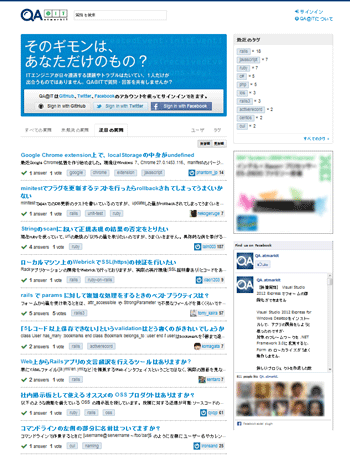

アイティメディア株式会社
アイティメディア株式会社について
IT総合情報ポータル「ITmedia」、オンライン総合ビジネス誌「Business Media 誠」、IT専門家向け情報サイト「＠IT」等のWebメディアおよびWebサービスを運営。1999年設立。2007年東京証券取引所マザーズ上場。本社東京都港区。従業員数178名（連結：2012年12月末日現在）。
IT技術者向けWebサービスをRubyによるアジャイル委託開発で立ち上げ
― アイティメディア株式会社では、永和システムマネジメントの「アジャイル受託開発」をどう活用しましたか。
当社では、Webサービス「QA＠IT（キューエー アットマーク・アイティ）」を立ち上げるにあたり、永和システムマネジメントの「アジャイル受託開発」を活用しました。
― 「QA＠IT」はどのようなWebサービスですか。
「QA＠IT」は、IT技術者向けのQ＆Aコミュニティサービスです。
2013年6月現在、「QA＠IT」ではたとえば次のことが可能です。
- プログラミングなどに関する技術的な質問を投稿する
- 投稿された質問に回答する
- 質問者本人が「これが自分の質問に対する回答だ」と思う回答を「accept」（受諾）する
- 他のユーザーの投稿の修正を提案する
- 投稿者本人が「この修正案は適切だ」と思う修正案を「accept」（受諾）する
- 「レピュテーション」(コミュニティー内での評価ポイント)に応じて、他のユーザーの投稿を評価(+1または-1)したり編集したりする権限が付与される
これらの機能により、「QA＠IT」は次のような特長を持つコミュニティになっています。
- 身近に質問できる相手がいない技術的な疑問を解決できる
- ユーザーが役に立った質問・回答に投票でき、その客観的な評価がサイトに反映される ⇒ より正確で有益なQ＆Aを簡単に見分けられる
- 質問者と回答者にはユーザーの投票によるレピュテーション（評価）ポイントが付与される ⇒ 自身の専門分野や技術スキルを可視化できる
- レピュテーション（評価）が一定のポイント数を越えるユーザーには他のユーザーの質問・回答を編集する権限が付与される ⇒ 客観的評価の高いIT技術者による、長期間にわたって役に立つ良質な技術解説が蓄積される。
- 同じ技術や開発に興味を持つIT技術者とつながることができる
「QA＠IT」は、当社のIT専門家向け情報サイト「＠IT」（アットマーク・アイティ）の関連サービスとして、2012年5月に運用を開始しました。1日200～300万のページビューがある「＠IT掲示板」に替わるサービスとして、現在ユーザーを着実に増やしています。
今後もIT技術者の課題解決スピード向上により貢献できるよう、機能を洗練・拡張していく予定です。
IT専門家向け情報サイト 「＠IT」（アットマーク・アイティ） |
質問・回答コミュニティ 「QA@IT」（キューエー・アットマーク・アイティ） |
|
 |
 |
「メディア専業」⇒「メディア × サービス」の業態拡張の一環として新サービスを構想

― 「QA＠IT」を立ち上げた背景を教えてください。
当社がオンライン・コミュニティサービス「QA＠IT」を立ち上げた背景には、もともとWebメディア専業だった当社が、WebメディアにWebサービスを組み合わせた「情報プラットフォーム」の運営へと、業態の拡張を図っていたことがありました。
個人的にも、IT業界の取材者・メディア編集者として、米国を中心に、「業界地図を塗り替える」どころか「世界を変える」ほどのインパクトを持ったWebサービスが、数人規模の開発者グループによって次々に立ち上げられている状況に、新しい時代の必然を感じていました。
また、米国で2人のIT技術者が立ち上げたITナレッジコミュニティが、世界中のIT技術者がナレッジを交流・蓄積する場として発展している状況に、「日本にも類似のサービスがあっていいのではないか」という思いを強めていました。
こうした会社としての事業戦略と、個人的な問題意識を背景に、2010年夏、
「IT技術に関するナレッジを日本語で効率的に交流・蓄積する場を提供することにより、日本のIT技術者の課題解決スピード向上に貢献する」
というビジョンを持った新サービスの立ち上げを経営陣に進言したところ、即座に採用が決まり、発案者の私が開発・運営責任者に指名されました。
どんな機能がユーザーに支持されるかは「作って試しながら考える」しかなかった
― 開発手法としてウォーターフォール型ではなくアジャイル型を選んだ理由を教えてください。
Webサービスをウォーターフォール型で開発すると、提供側の“独りよがり”でユーザーに支持されないサービスを作ってしまうリスクが大きくなります。
私たちが構想したコミュニティサービスの成功は、IT技術者にどれだけ活発に参加してもらえるかにかかっていました。しかし具体的に、どのような機能があれば多くのIT技術者が参加したくなるコミュニティになるのかは、作って試しながら考えるほかない状態でした。
手本とした米国のITナレッジコミュニティは、既に膨大な機能を備えています。最初から同等の多機能サービスを実現することは、予算的にも時間的にも不可能です。まずは必要最小限の機能からスタートし、運用しながら徐々に機能を充実させていく必要がありました。しかしどんな機能が「必要最小限」にあたるのかも、実際に作って試さないことには判断できませんでした。
アジャイル型開発には、
- ユーザーの反応を試しながら機能を決めていける
- 最低限の機能でスタートしやすい
- 手戻りのリスクが小さい
といったメリットがあり、こうしたコミュニティ型のWebサービスの立ち上げには、特に有利と判断しました。
― 開発言語としてRubyを選んだ理由を教えてください。
IT業界を取材していて、Webアプリケーションの開発者がいま一番活発なコミュニティを形成しているのが、Rubyだと感じていたからです。
Web事業のスタートアップには、「アジャイル開発」＋「Ruby」＋「クラウド」の組み合わせが最も有利と言われています。米国のIT業界にはこの3つの頭文字を取った「ARC（アーク）」という言葉まであります。実際、急成長しているWebサービスの多くがこの組み合わせで開発されていました。
そこから興味を持ち、いつか自分でもWebサービスを作ってみたいと思いRubyを学んでいましたので、私自身が理解できる言語という意味でも、開発言語はRubyの一択でした。
委託先の第一条件は“信頼性”。開発者コミュニティ内での評判を最も重視した
― 開発委託先はどのような基準で選定しましたか。
委託先は、
- 信頼性（＝期日までに、サービスの目的に最もかなうシステムを開発できると見込める）
- 経済性（＝費用が妥当である）
- 継続性（＝サポートの継続性に不安がない）
の3つの基準で選定しました。中でも、信頼性を特に重視しました。
― なぜ、信頼性を特に重視したのですか。
要件を事前に確定するウォーターフォール型開発に比べて、要件を確定しないままシステムを発注するアジャイル開発では、委託先の実力の違いが、成果物の品質の違いにはるかに大きく影響するからです。
また、このサービスは運用開始後もビジネスとして拡大していくつもりでしたので、最初のコアになる部分は、特に緻密に設計・構築してもらう必要がありました。
― 信頼性の高い委託先を、どのように探しましたか。
信頼性の高い委託先は、
- 開発者コミュニティで評判や実力、実績を聞いて回る
- 各エンジニアのオープンソースでの仕事ぶりを見る
- 各エンジニアの技術ブログを読む
といった方法で探しました。
私は以前から個人的な関心と取材を兼ねてRubyのコミュニティに参加していたので、エンジニア達との個人的なつながりができていました。コミュニティに参加していると、システム会社の評判や実力に関する情報も自然に流れてきました。“開発者ギルドの親方”的人物にも直接会い、委託先候補について、歯に衣着せぬ評価を聞かせてもらいました。また、いま優秀なエンジニアはオープンソースで活躍しているので、「GitHub（ギットハブ）」のようなソフトウェア開発プラットフォームで実力をチェックすることもできました。
このように様々な角度から見て、エンジニアの実力が最も高いと判断できたのが、永和システムマネジメントでした。
社内で評価が高かったのは金融・医療分野でのシステム開発実績
― 永和システムマネジメントに開発を委託することについて、社内の意見はいかがでしたか。
技術的な評価はできない部署も、永和システムマネジメントの売上規模や実績を知ると安心していました。特に、金融関係や医療関係のシステム開発で実績があることは、信頼性の点で高く評価されました。
予算も妥当と判断され、永和システムマネジメントに開発を委託することが決まりました。
アジャイル開発の特性を繰り返し説明し法務部門の了承を得た
― アジャイル開発の発注で難しかった点はありますか。
開発委託契約を結ぶにあたって、法務部門の了承を得るのが少々難しかったです。法務部門からは、実装する機能のリストを事前に出すよう求められましたが、そこを事前に確定できないのがアジャイル開発です。
― 法務部門の了承をどのように得ましたか。
今回の開発で目指すゴールと、ゴール実現のため実装を目指す機能のリストを作成しました。その上で、アジャイル開発の特性を繰り返し説明し、「機能リストはあくまで目標」ということで了解を得ました。機能リストの作成にあたっては、永和システムマネジメントの開発チームのみなさんとホワイトボードの前でディスカッションして、必要と思われる機能を書き出し、優先順位を整理した上で、今回の予算と納期でどこまで実装できそうか回答してもらいました。
永和の開発チームとのやり取りでアジャイル開発の進め方は自然に飲み込めた
― 実際に永和システムマネジメントのチームとのアジャイル開発が始まって、どのようなことが印象に残りましたか。
永和システムマネジメントのチームは、アジャイル開発を何百とこなしているだけあって、タスクの優先順位を決める議論の進め方についても、コミュニケーションの取り方にしても、プロジェクト管理ツールの使い方にしても、「アジャイル開発に最適なやり方を確立している」という印象を持ちました。
私自身はアジャイル開発の当事者になるのは初めてだったのですが、オンラインやオフラインで開発者達と話し合ったり、開発者同士が話し合う様子を眺めたりするうちに、アジャイル開発の進め方が自然に飲み込めました。
本来発注側の責任者としてプロジェクトを引っ張る立場だったのですが、最初の1～2ヶ月は、むしろ永和システムマネジメントの開発者に引っ張ってもらった感じでした。
最初のプロトタイプは１カ月で完成
― 最初のプロトタイプが完成するまでにどれぐらいかかりましたか。
最初のプロトタイプは1カ月で完成しました。実際に動くプロトタイプの威力は想像以上に強力で、以後、実装すべき機能やユーザーから見た印象について、実感に即して議論できるようになりました。
プロジェクトのビジョンを共有し、最適の機能を考え実現してくれた
― 他に、開発の過程で印象に残ったことはありますか。
開発チームのみなさんが、「限られた納期・予算の中でプロジェクトのビジョンを最大限に実現できる仕様」を常に考えてくれたことが印象に残っています。IT技術者として自分達が使いたくなる機能を、積極的に提案し実装してくれました。発注者の私が希望した機能でも、ユーザーの反発を招く可能性があれば、遠慮なく指摘してくれました。おかげで提供側の“独りよがり”に陥らない、アジャイル開発ならではの、本当にユーザーが使いたくなるWebサービスを完成させることができました。
サービスのリリース当日、ちょっとしたトラブルが発生して、切羽詰まったことがありました。既に夜も遅い時間で、「さすがに対応してもらうのは難しいかもしれない‥‥」と思いつつ、開発チームのリーダーの方にSNSで事情を伝えました。そうしたら瞬時に「We are a team!」というメッセージが返ってきたんです。「僕たち同じチームじゃないですか」って。プロジェクト管理ツールの画面を眺めていると、目の前で猛烈な勢いでto doリストが並んで、数十分後にはすべての問題が解決してしまいました。ああ組織の壁を超えてチームとして仕事ができるっていいな、永和さんと一緒に仕事ができてよかったな、って思いましたね。
アジャイル開発の委託を検討している方へのアドバイス
― アジャイル開発を検討している方にアドバイスがあればお願いします。

あるビジョンをシステムで実現したい時、どんな方法がベストなのかは、現場のエンジニアはわかってるんですよね。ただビジネスとしてそれを実現しようとすると、どうしても「発注前に要件や仕様を定義して、定義通りに実装して」という話になってしまう。実際の開発はアジャイル型で進んでいるのに、契約はウォーターフォール型になっているところに、現場の苦しみがあったりもします。だから発注側も考えを少し変えて、エンジニアがより実力を発揮しやすい契約の結び方を模索する必要があるのではないでしょうか。
アジャイル開発の場合、実力の高いエンジニアに依頼することが特に重要になりますが、今はその気になれば、開発者コミュニティにアクセスして、エンジニアの評判を調べるのは簡単です。実際調べてみれば、永和システムマネジメントのエンジニア達のすごさがわかると思います。
それから、アジャイル開発では、エンジニアが発注者の立場に踏み込んできてくれるとよりよいシステムができるのですが、逆に発注者もエンジニアの立場に踏み込んでいった方が、よいシステムができるはずです。簡単なプログラミンクの本をちょっと1～2冊読んでみるだけでも、エンジニア同士の会話や、彼らの苦労が理解できるようになると思います。プログラミングなど縁のなかった方も、エンジニアにお勧めの本を尋ねるなどして、読んでみることをお勧めします。
貴重なお話をありがとうございました。